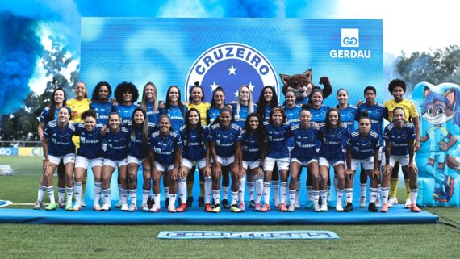

Notícias Futebol Feminino
Cruzeiro apresenta queixa à CBF sobre a arbitragem na semifinal da Supercopa.
Na partida contra o Corinthians, o Cruzeiro contestou a decisão da arbitragem de invalidar um gol por impedimento, aos 23 minutos do segundo tempo. O lance ocorreu durante a derrota do time mineiro por 1 a 0.